JUST COSMETICS DEUTSCHLAND
Partiamo col dire subito che non vedevo l'ora di parlarvi di questa nuova collaborazione.
Ho testato i prodotti in 2 giorni presa dall'euforia e oggi, dopo tante foto, swatches e test, eccomi qui a dire la mia.
Innanzitutto volevo ringraziare l'azienda per la precisione e la perfetta sintonia che c'è stata. .
Un marchio che non è ancora presente in Italia che non credo tarderà molto ad arrivare poichè ciò che lo contraddistingue è la qualità e l'innovazione di ogni singolo prodotto.
Ha una vasta gamma di colori e varia sia per unghie che per makeup. .
la grande particolarità di questo brand è che assicura ogni 3 mesi una limited collection . .ovvero collezioni sempre in aggiornamento in fatto di tendenza.
Io ho ricevuto come prodotti da testare una praticissima pochette con all'interno ben 6 articoli da provare:
2 smalti color azzi - nail polish
090 be exciting
250 be gentle
rossetto matte finish lipstick n°030 quickstep
shine lipgloss n°020 candy pop
ombretto silk&satin eye color n°010 coco belle
cheek & glow blusher n°020 hazelnut
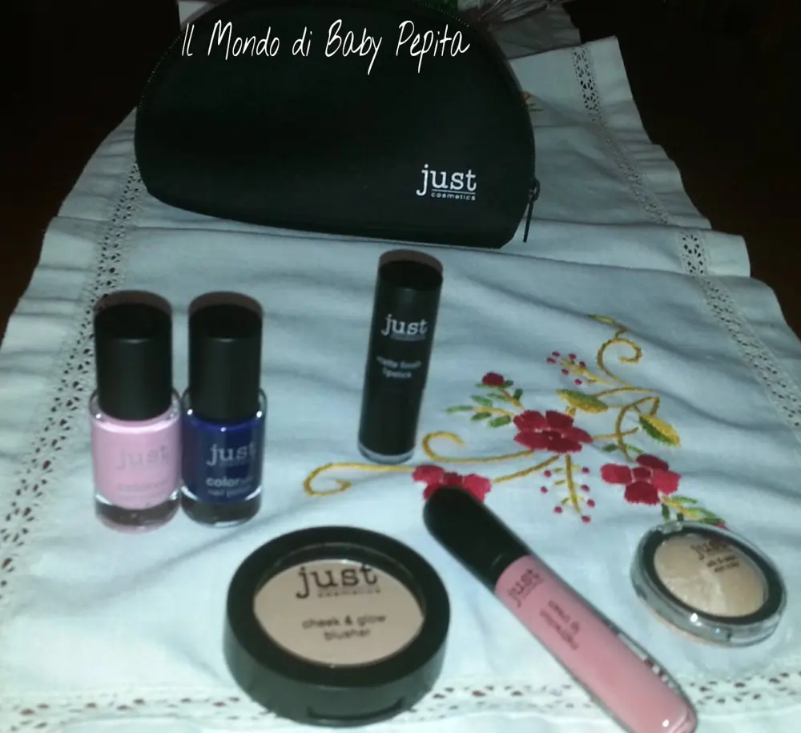
Inizio col dirvi che vi farò ora vedere gli swatches di tutti i prodotti fuorchè degli smalti, per quelli farò un post a parte poichè mi ci vuole qualche giorno in più per testarli.
Andiamo a vederli nel particolare!
Matte finish lipstick
n°030 quickstep
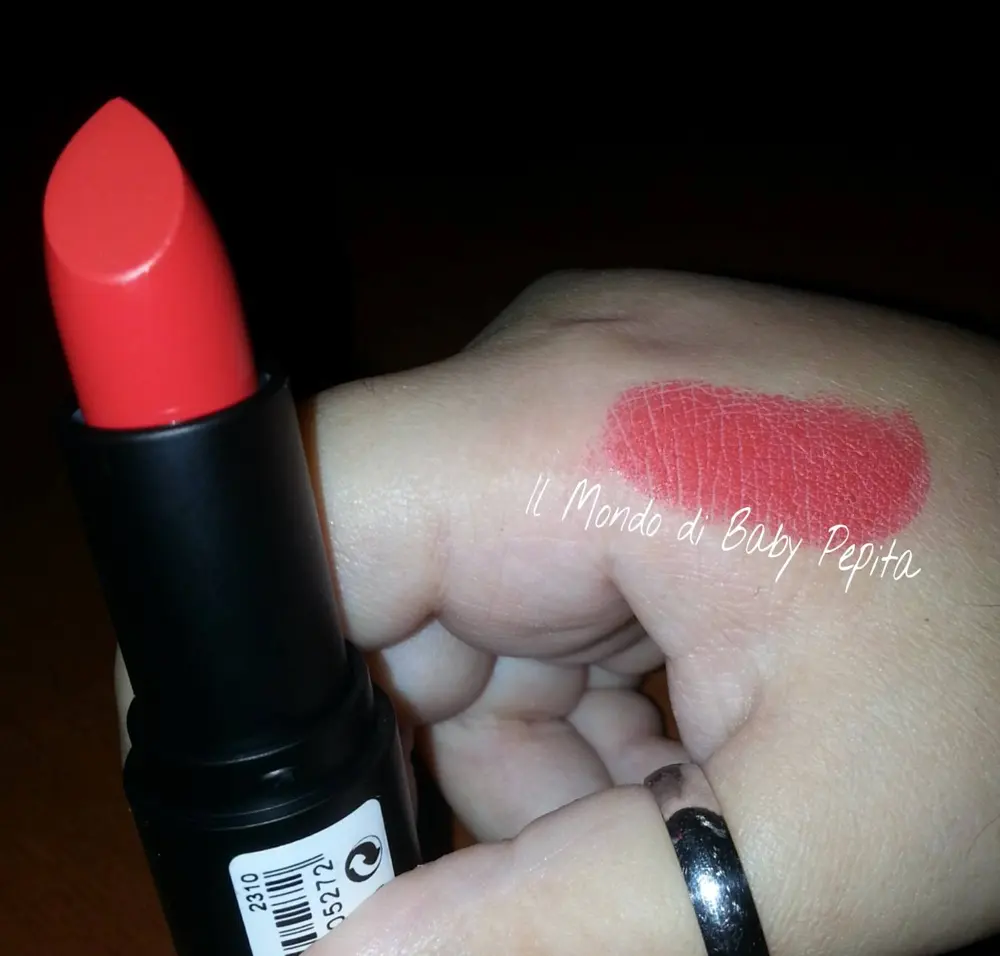
Rossetto di finitura opaca molto pigmentato e si distingue per la sua lunga durata. Preparato con oli pregiati che pretegge le labbra garantendo una finitura matte strepitosa.
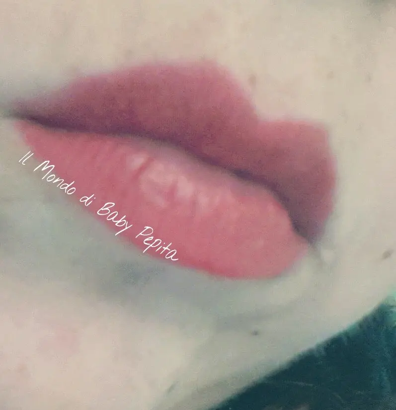
Effetto sulle mie labbra. .
(mi scuso in anticipo per la qualità delle foto ma non ho potuto fare di più)..
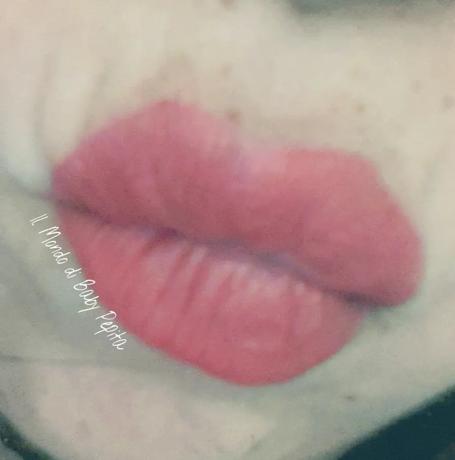

Per quanto riguarda il colore, mi è piaciuto molto perchè è un rosso non tanto acceso ma nemmeno spento tipo vedova allegra, un rosso portabile sia di giorno che di sera tranquillamente.
La durata dipende tutto da ciò che fai, ovvio se dopo averlo messo ti metti a sgranocchiare patatine e a bere a più non posso va via . .ma se tenuto normalemnte, a me è durato sulle 5 ore senza problemi poi ho cenato ed è rimasto un alone di colore sulle labbra. .
Unico problemino che non idrata le labbra, se dovete mettere questo rossetto e avete le labbra un pò screpolate non ve lo consiglio. .per altri giorni si invece ed è anche molto bello.
Di sicuro non va passeggiando sul viso come alcuni rossetti, e questa cosa l'adoro.
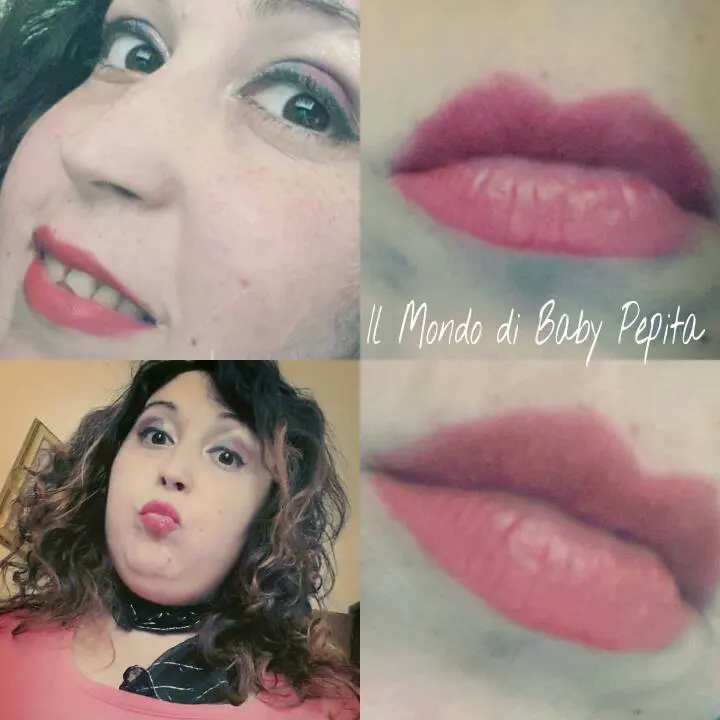
ombretto silk&satin eye color
n°010 coco belle
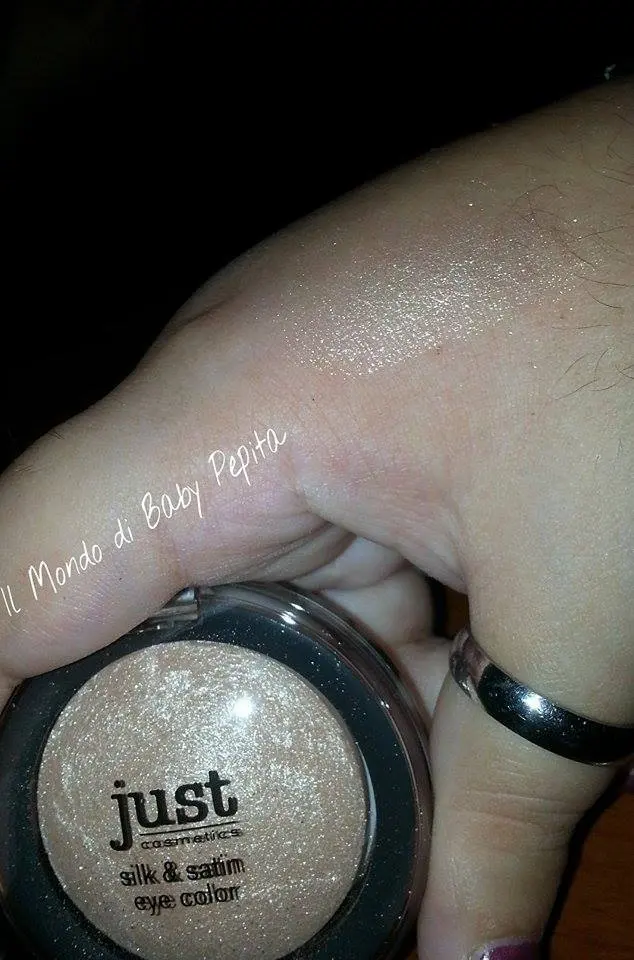
Questo ombretto radiante ricco di colori con Primer integrato offre una finitura satinata eccezionale e riflessi di colori vivaci. Il consiglio per un risultato colore più intenso: Applicare bagnato con una goccia d'acqua.
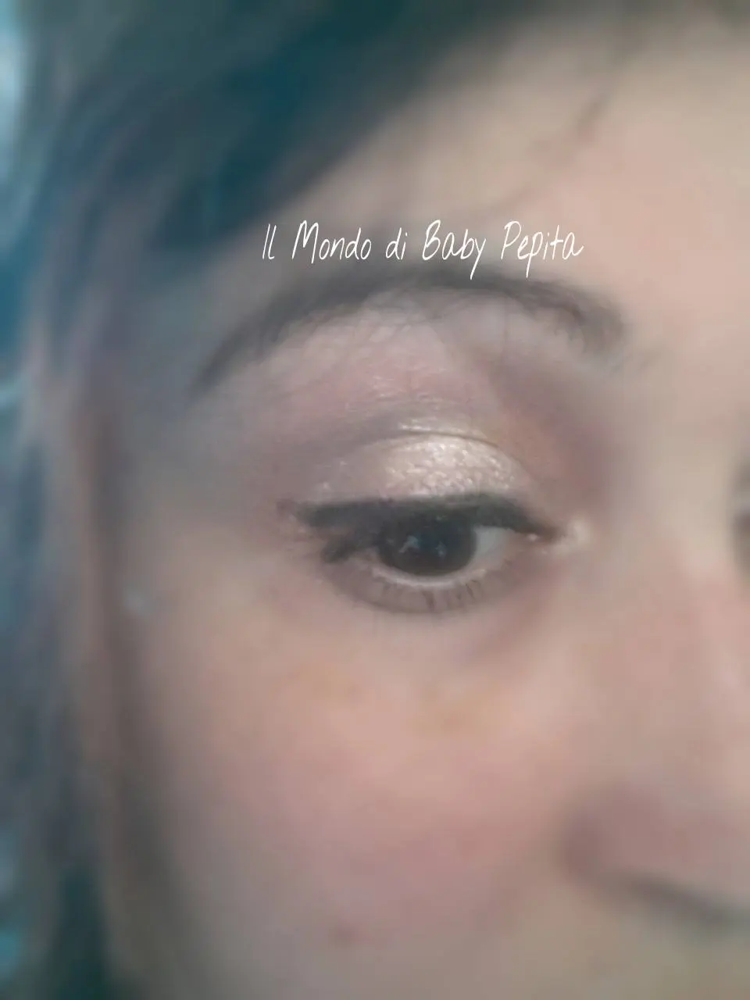
Colore brillante, io devo essere sincera l'ho usato in due modi; come ombretto luminoso come in foto e anche come illuminante nel punto all'interno dell'occhio in un makeup più elaborato. .(vi posto sotto anche l'altro makeup). .
Lo trovo bellissimo, sia per durata che per consistenza. .
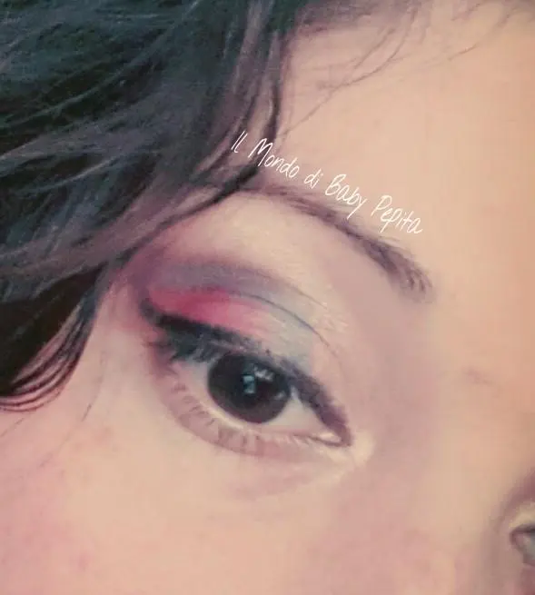
cheek & glow blusher
n°020 hazelnut
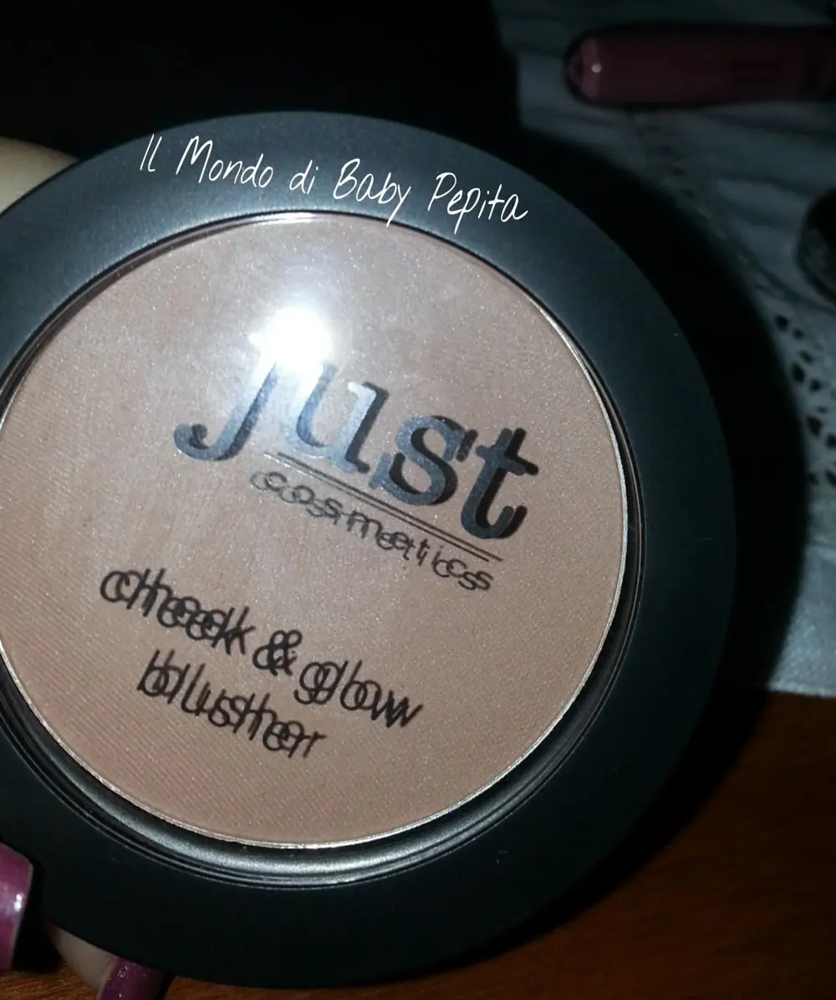
Questo blush in polvere di seta opaca con Primer integrato convince per durata e colori brillanti . E' molto luminoso e fornisce una carnagione sagomata, fresca e con una luce particolare.
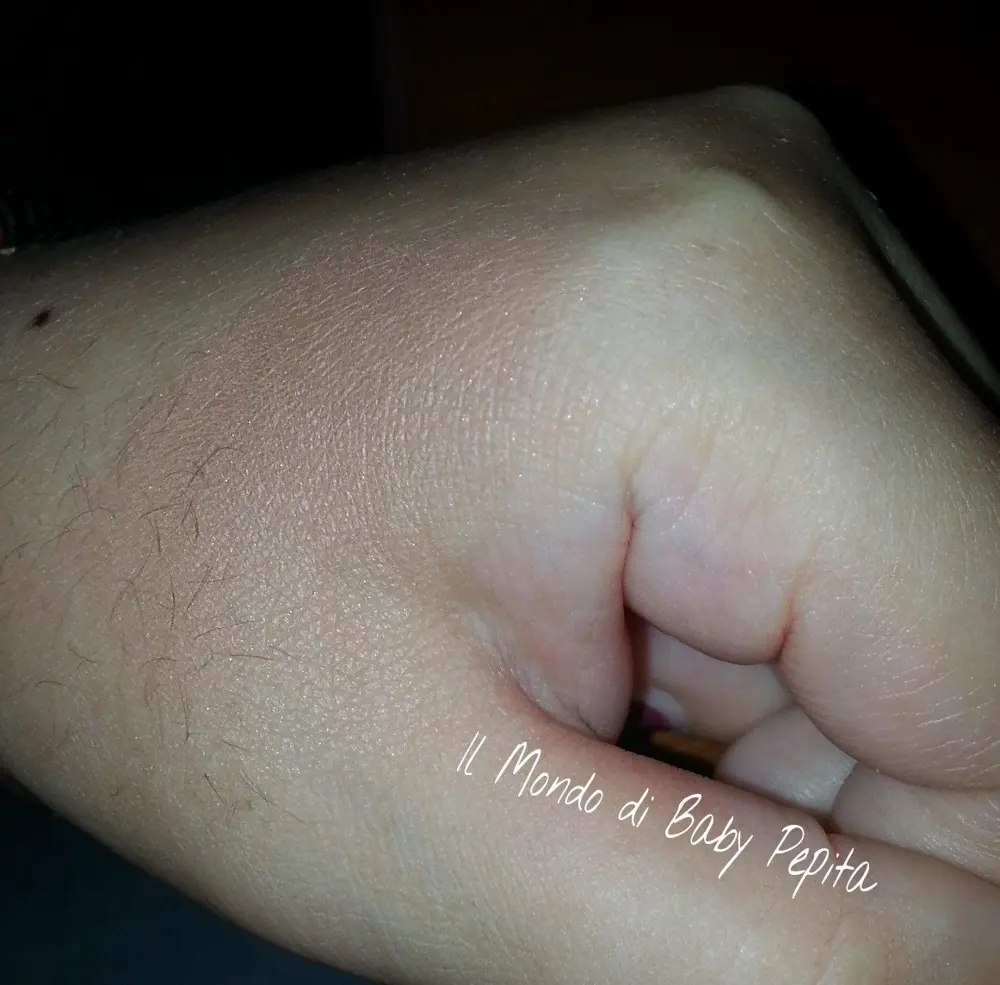
sinceramente, non uso molto i fond,i blush, i fard, ciprie, terre e quant'altro, non amo impasticciarmi il viso con prodotti per tutta la giornata e non mostrare il vero volto. Non sono dunque un esperta di base, ma per la mia poca esperienza posso dire che oltre vabbè al colore che è molto nelle mie corde, questo blush mi è piaciuto per essere protagonista ma dietro le quinte. .
Vi spiego meglio, l'ho usato ma non si nota ma permette al viso una forma più sagomata. .
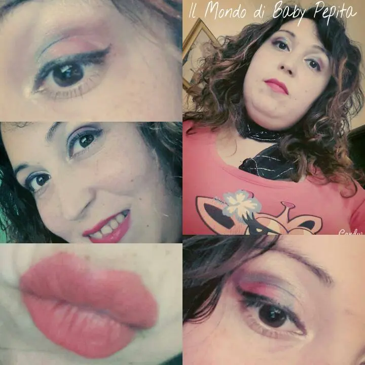
shine lipgloss
n°020 candy pop
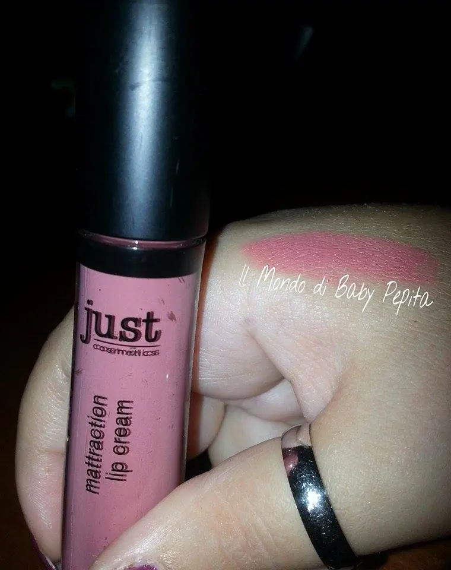
Le caratteristiche di qiesto gloss è la brillantezza e la durata intensa di un effetto bagnato e lucido. Basta applicare grazie all'innovativo applicatore labbra, che è perfettamente in sintonia con la forma naturale delle labbra.
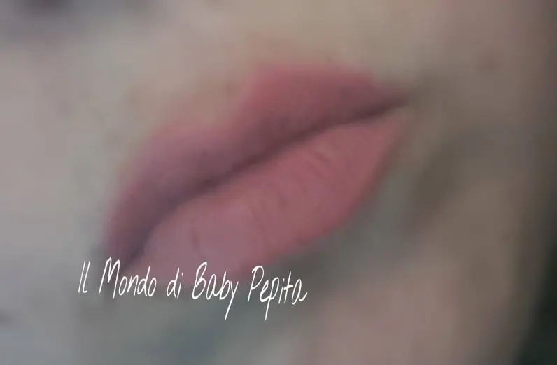
Che dire di questo gloss?a me ha colpito tantissimo il colore, che amo, perchè è natural e non si nota molto sulle labbra ma delinea che è una meraviglia, il profumo poi. . ragazze ha un profumo che appena indossate il gloss poi lo terrete sotto il naso per tutta la durata e vi assicuro che è buonissimo.La durata è abbastanza buona, tiene le sue 4-5 ore senza problemi. Insomma promosso anche lui. .
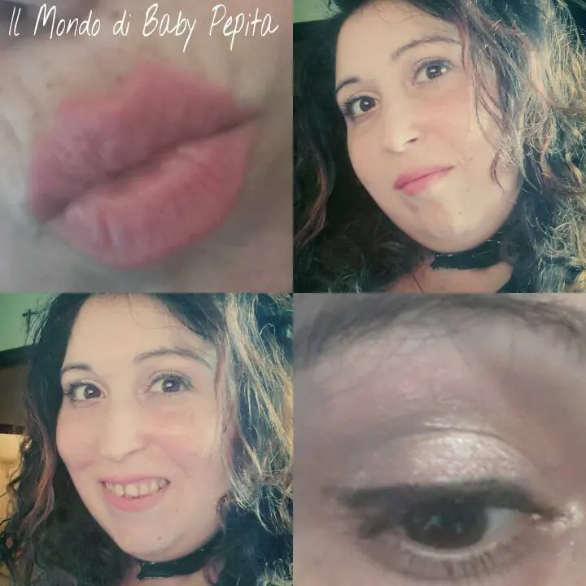
Dunque non è finita la prova test di questo brand perchè come anticipato sopra devo provare ancora i due smaltini. . Mi viene da scrivere TO BE CONTINUED ihihih
Se siete interessati a questi fantastici prodotti potrete trovare tutto sul sito http://just-cosmetics.eu/
oppure facebook https://www.facebook.com/justcosmeticsDE?fref=ts